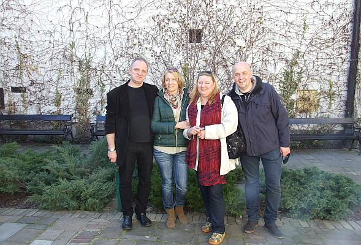
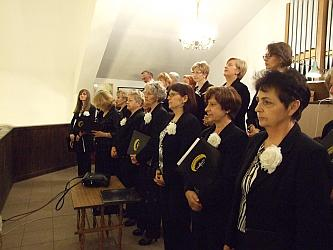
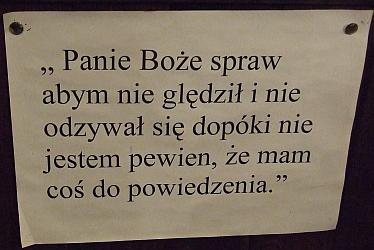
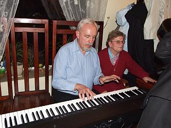
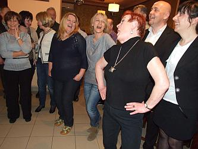

do aktualności
do aktualności2014-03-29
Sobota 6.30, Camerata wyjeżdża na koncert do Zamościa. Pogoda piękna i wszyscy radośni.
„Szefowa” wyjazdu wszystkich wita i zarządza odśpiewanie Bogurodzicy... jedziemy.
Dotarliśmy szczęśliwie na miejsce. „Wysypujemy” się autokaru i rozprostowujemy kości.
Gospodarze, czli chór Contra z Zamościa już na nas czekają z panią dyrygent Anną Konopą – Cios. Idziemy zwiedzać Zamość.
Zamość nas urzekł swoim pięknem, więc chodzimy z zadartymi głowami i podziwiamy.
Wchodzimy do pięknego kościoła. Przewodnik wspaniale opowiada.
No i co … trzeba pięknie zaśpiewać, więc śpiewamy.
Zaśpiewaliśmy super, co widać po minie dyrygentki no i oczywiście chóru.
Naszym gospodarzom z chóru Contra, też się chyba podobało???
Idziemy jeszcze na spacer wzdłuż murów obronnych Zamościa. Jest tu tak pięknie, że same robią się zdjęcia i tak … Bogusia i fiołki
Ela, Olga, gospodarze i magnolia.

Jeszcze wszyscy (no prawie wszyscy:) na schodach i udajemy się do autokaru.
A po drodze spotykamy piękną (dawną) ZAMOJSZCZANKĘ, która się do nas uśmiechnęła i sobie poszła :(.
Pora zacząć myśleć o dzisiejszym koncercie. Jedziemy do kościoła p.w.św. Michała Archanioła w Zamościu. Tutaj oprawiamy muzycznie mszę a po mszy śpiewamy koncert. Instalujemy instrument, na którym akompaniować nam będzie Małgorzata Westrych. Obie panie dyrygentki obecne, więc zaczynamy próbę.
Teraz trzeba szybko się przebrać, chwilę odpocząć i … zaczynamy. Mszę śpiewamy z chóru. Na organach gra Zenon Kulik nasz bas.

Czeka nas jeszcze dużo stania, więc na chórze wykorzystujemy czas, gdy nie śpiewamy na odpoczynek.
I można poczytać ciekawe teksty przypięte do bariery :))).

Są też nasi gospodarze, czyli chór CONTRA z Zamościa, który również zaśpiewa podczas mszy, co pozwoli nam zejść na dół i ustawić się do koncertu.
Zaczynamy koncert my.
Teraz występuje chór Contra z Zamościa. Śpiewają pięknie.
I na koniec chóry wspólnie pod dyr. Izabeli Szoty zaśpiewały Ave Verum.
Dostaliśmy wielkie brawa i trzeba było jeszcze raz zaśpiewać, ale bis jest zawsze najlepszy, bo bez stresu. Teraz kwiaty i podziękowania.
Koniec koncertu. Jedziemy do Zwierzyńca, gdzie mamy nocleg oraz kolację wspólnie z chórem Contra.
A że chóry to „zwierzęta” muzyczne, długo czekać nie trzeba było, żeby wszyscy zaczęli śpiewać.
A jak śpiewać, to z akompaniamentem, więc panowie szybko zmontowali instrument a i gitary też się znalazły.
Za chwilę klawiatura była tak wypełniona, że wszyscy chętni „grajkowie” już się nie zmieścili, więc …

dyrygentka zaśpiewała solo, ale jak???
Byli też chętni do tańca, do gry na gitarach i do śpiewania.

Śpiewom nie byłoby końca, ale jutro też jest dzień i obydwa chóry mają koncerty, więc trzeba kończyć śpiewy, chociaż żal, ale myślę, że powtórzymy to w Wieliczce.
Tak zakończył się pierwszy dzień pobytu w Zamościu. Idziemy spać, bo rano koncert.
do aktualności


 Prowadzenie strony: Małgorzata Wysocka-Cebula
Prowadzenie strony: Małgorzata Wysocka-Cebula